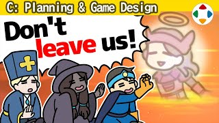
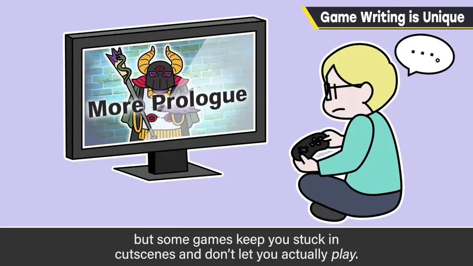
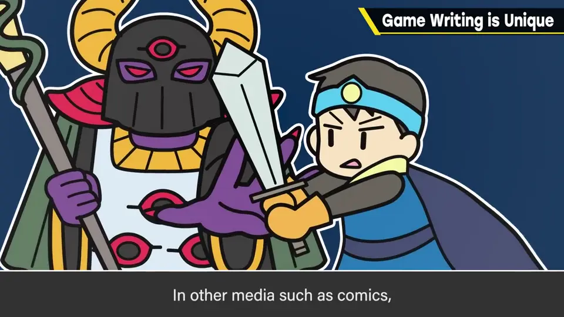
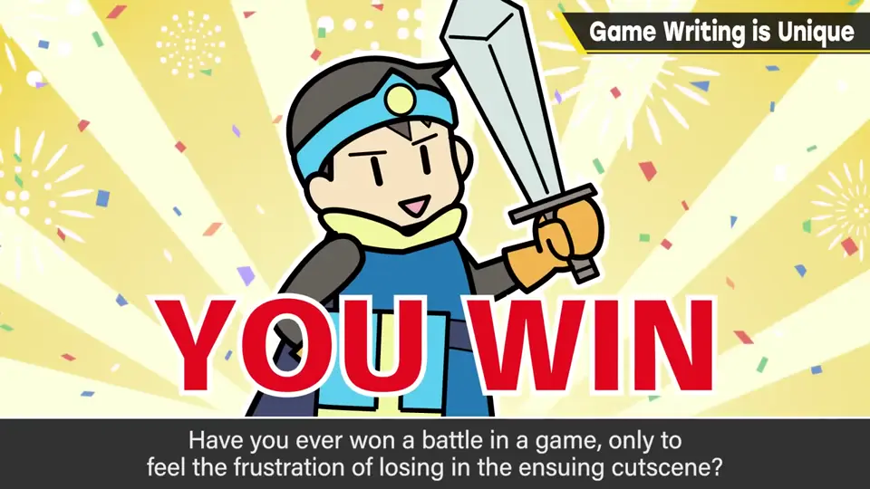
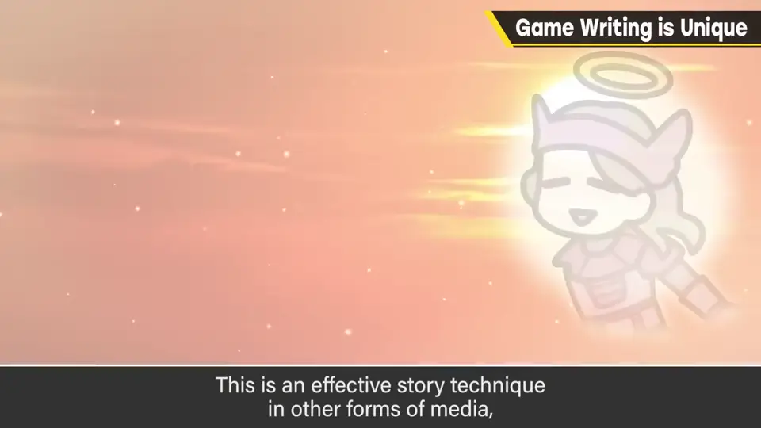
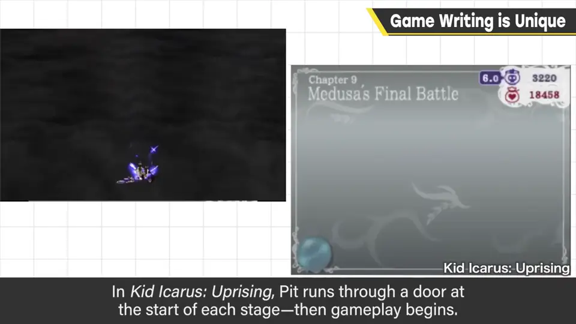
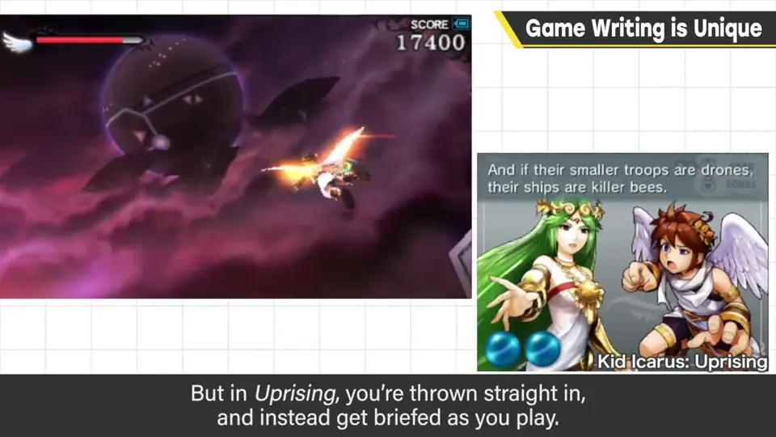

速览
游戏的剧本创作与一般媒体有很大不同——正因不同，也可以反过来做出新颖呈现。先讲四个不同点。① 对想玩游戏的人，剧情可能碍事：想看故事的人还好，但过场一直持续、迟迟不让玩，动作游戏尤其烦躁；跳过又怕看不懂剧情，最好做成能跳过。② 基本是主角视角：同伴或敌方 Boss 走到这一步的背景插叙，在漫画中已是王道，但不太适合游戏。③ 与敌人/敌军作战的剧本里，主角基本要一路上升、一直获胜：明明打赢却被强制判输，你感受过那种不讲理吗？因剧情需要白费成果会带来压力。④ 同伴不能在剧情中死亡或被迫离队：在其他媒体中有效，但在游戏里会牵涉队伍构成变化、道具无法继承等难题。这四点是游戏剧本的问题点，但也可以无视定论、刻意去做：会让玩家不舒服，但包括这种感受在内，也可能成为印象深刻的剧本。作为当代作品，樱井想强调一点：一开始不是讲故事，而是让玩家开始玩——不要先长篇说明序章，而是迅速投入游戏，细节剧情之后再说。《新·光神话 帕尔提娜之镜》一开始关卡，皮特就穿过门开始游戏；这类游戏通常有任务简报，但新帕尔提娜直接把你扔进关卡，边玩边听任务说明。「游戏时间越长越好」是过去的事。新帕尔提娜的剧本是樱井写的，在正式开发前就备齐了剧本，做出了发挥游戏优点的剧本与演出（详见「作品构想」分类）。
1. 游戏剧本的四个不同点 0:02
游戏的剧本与一般媒体的剧本创作有很大不同。正因为不同，也许能反过来做出新颖的呈现。先解说四个不同之处。
2. ① 剧情可能碍事 0:17
对想看故事的人来说没问题，但过场动画一直持续、迟迟不让人玩，特别是动作游戏，会让人烦躁。跳过的话，又担心看不懂剧情。最好做成可以跳过。

3. ② 主角视角 0:48
同伴或敌方 Boss 如何走到这一步的背景，被长篇插叙进来——这在漫画等媒体里已是王道展开，但不太适合游戏。

4. ③ 主角必须一直赢 1:10
在与敌人或敌军作战的剧本中，主角基本上要一路成长、永远获胜。你有没有过明明打赢了战斗，却被剧情强制判为失败的不讲理感受？因剧情需要而让玩家的成果白费，会造成压力。

5. ④ 同伴不能死或离队 1:29
同伴在剧情中死亡或被迫离队，在其他媒体里是有效的呈现手法；但在游戏中，会牵涉到队伍构成改变、道具无法继承等难题。

以上四点是游戏剧本的问题点，但也可以无视这些定论，刻意去做。玩家会不舒服，但连同这种感受在内，也可能成为令人印象深刻的剧本。
6. 先玩游戏，剧情随后 2:10
《新·光神话 帕尔提娜之镜》一开始关卡，皮特就穿过一道门，游戏马上开始。这类游戏本来通常会有任务简报、说明任务目的等；但新帕尔提娜直接把你扔进关卡，边玩边听任务说明。


「游戏时间越长越好」已经是过去的事，这样快节奏地推进也挺好。新帕尔提娜的剧本由樱井亲自撰写，在正式开发前就备齐了剧本，做出了发挥游戏优势的剧本和演出。（详见「作品构想」分类中新帕尔提娜的那一期。）
自测题
1. 游戏剧本与一般媒体的四个不同点是什么？
① 剧情可能妨碍游玩 ② 基本是主角视角 ③ 主角必须一直赢 ④ 同伴难以在剧情中死亡或离队。 0:17
2. 为什么「打赢却被剧情判输」会有问题？
因剧情需要白费玩家的成果，会带来不讲理感和压力。 1:10
3. 《新·光神话 帕尔提娜之镜》如何开场？
不做任务简报，关卡一开始就穿门开打，边玩边听任务说明。 2:28